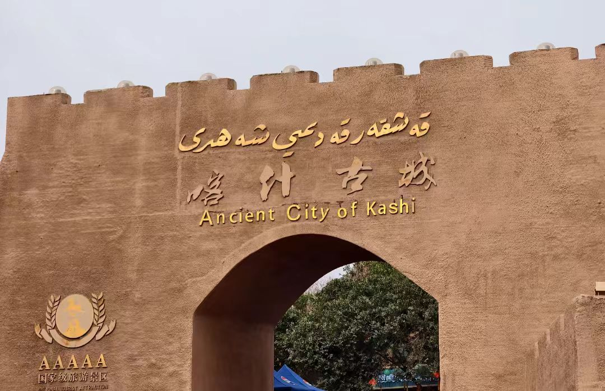

传奇：喀什古城，又称喀什噶尔古城，位于新疆维吾尔自治区喀什地区喀什市中心，是中国唯一的以伊斯兰文化为特色的迷宫式城市街区，也是世界上现存规模最大的生土建筑群之一。古城始建于2100多年前的西汉时期，是古代丝绸之路南北两道的交会点，也是东西方文化交流的重要枢纽。古城总面积4.25平方公里，现有居民12.68万人，其中维吾尔族占95%以上。古城街巷纵横交错，布局灵活多变，民居多为土木、砖木结构，具有浓郁的维吾尔族建筑特色。2015年，喀什古城被国家旅游局评为"中国国际特色旅游目的地"，是国家5A级旅游景区，也是新疆首个国家5A级历史人文景区。
核心看点：
游览攻略：
交通信息：喀什古城位于喀什市中心。外部交通：①飞机：喀什徕宁国际机场，距古城10公里，车程20分钟；②火车：喀什站，距古城6公里，车程15分钟；③汽车：喀什客运站，距古城3公里。内部交通：古城内只能步行，禁止机动车通行。周边景点有喀什大巴扎（1公里）、香妃墓（5公里）、玉素甫·哈斯·哈吉甫墓（3公里）、喀什博物馆（4公里）。距乌鲁木齐1470公里，飞机2小时，火车16小时。建议与喀什大巴扎、香妃墓、帕米尔高原组合游览。
历史沿革：喀什古城有2100多年历史。①汉代：公元前2世纪，为疏勒国都城，是西域三十六国之一；②唐代：设疏勒都督府，是安西四镇之一；③宋代：为喀喇汗王朝东部都城，伊斯兰教传入；④元代：为察合台汗国重镇；⑤明代：为叶尔羌汗国都城；⑥清代：设喀什噶尔参赞大臣，为南疆政治中心；⑦现代：新中国成立后，为喀什地区行署驻地。喀什是新疆历史最悠久的城市之一。
丝绸之路：喀什是丝绸之路的重要枢纽。①位置：位于丝绸之路南北两道交会点，北道经阿克苏、库车，南道经和田、若羌；②功能：是商旅、使节、僧侣的中转站，东西方商品的集散地；③交流：促进了中原与西域、中国与中亚、欧洲的文化交流；④遗产：留下了丰富的文化遗产，如佛教石窟、伊斯兰建筑等。喀什是丝路文明的"活化石"。
伊斯兰化：10世纪，伊斯兰教传入喀什。①喀喇汗王朝：第一个信奉伊斯兰教的突厥王朝，以喀什为东部都城；②萨图克·布格拉汗：喀喇汗王朝可汗，率20万部众皈依伊斯兰教；③影响：伊斯兰教成为喀什的主要宗教，修建了艾提尕尔清真寺等伊斯兰建筑；④融合：伊斯兰文化与当地文化融合，形成了独特的维吾尔族伊斯兰文化。
近代变迁：19-20世纪，喀什经历重大变迁。①阿古柏入侵：1865-1877年，浩罕汗国阿古柏侵占喀什，建立"哲德沙尔汗国"；②左宗棠收复：1877年，清军收复喀什；③民国时期：为喀什行政区；④新中国成立后：1952年，设喀什市；⑤改革开放后：古城得到保护，2009年开始大规模改造。喀什保持了历史文化名城的特色。
改造工程：2009-2015年，喀什古城进行保护性改造。①背景：古城基础设施落后，存在安全隐患；②原则："修旧如旧，保留风貌"；③内容：改造供水、排水、供电、通信等基础设施，加固危房，保护传统建筑；④效果：改善了居民生活条件，保护了古城风貌，促进了旅游发展。改造工程获得了联合国教科文组织的高度评价。
现代发展：喀什古城在保护中发展。①旅游：2015年评为国家5A级景区，年接待游客数百万人次；②文化：保护维吾尔族传统文化，传承手工艺；③经济：发展旅游、手工艺等产业，提高居民收入；④社会：保持社区活力，促进民族团结。喀什古城是"保护与发展"的成功范例。
总体布局：喀什古城是典型的伊斯兰城市布局。①无规划：没有统一规划，自然形成迷宫式格局；②街巷：巷道狭窄弯曲，适应沙漠地区防风沙、遮阳光的需要；③分区：按职业、家族聚居，形成不同的社区；④中心：以艾提尕尔清真寺为中心，辐射全城。布局体现了适应环境、注重社区的智慧。
建筑形式：古城民居形式多样。①高台民居：依崖而建，有"过街楼""半街楼""悬空楼"；②庭院式：有内庭院，四周是房间；③楼层式：多为二层，一层储物，二层居住；④混合式：多种形式结合。形式适应地形、气候、功能的需要。
建筑结构：民居为土木、砖木结构。①基础：用石材或砖砌基础；②墙体：用土坯砌墙，厚0.5-1米，保温隔热；③梁柱：用木梁、木柱支撑；④屋顶：平顶，用木椽、苇席、泥土覆盖。结构简单，材料易得，适合当地条件。
建筑装饰：民居装饰富有民族特色。①木雕：门窗、梁柱有精美木雕，图案有几何形、花卉、古兰经文等；②彩绘：墙壁、天花板有彩绘，色彩鲜艳；③石膏雕花：墙面有石膏雕花装饰；④砖雕：用砖拼出几何图案。装饰体现了维吾尔族的审美。
庭院布局：维吾尔族民居注重庭院。①功能：庭院是家庭活动、待客、纳凉的场所；②元素：有葡萄架、果树、花池、水池等；③朝向：多为南向，采光好；④分隔：用花墙、拱门分隔空间。庭院是民居的"灵魂"。
建筑材料：民居采用本地材料。①土：用黏土制作土坯；②木：用杨木、柳木、桑木；③砖：用青砖、红砖；④石膏：用石膏做装饰。材料生态、环保、经济。
语言文字：维吾尔族有独特的语言文字。①语言：维吾尔语属阿尔泰语系突厥语族；②文字：使用阿拉伯字母为基础的维吾尔文；③文学：有《福乐智慧》《突厥语大词典》等古典文学；④教育：有经学院、现代学校。语言文字是文化的载体。
宗教信仰：维吾尔族主要信仰伊斯兰教。①教派：多数属逊尼派；②礼仪：有礼拜、封斋、朝觐等；③节日：有肉孜节、古尔邦节等；④场所：有清真寺、麻扎（陵墓）等。伊斯兰教对维吾尔族文化有深远影响。
音乐舞蹈：维吾尔族能歌善舞。①木卡姆：大型古典音乐套曲，有十二木卡姆、刀郎木卡姆等；②乐器：有热瓦普、都塔尔、弹布尔、艾捷克、手鼓等；③舞蹈：有赛乃姆、刀郎舞、萨玛舞等；④麦西热甫：民间歌舞聚会。音乐舞蹈是维吾尔族的情感表达。
手工艺：维吾尔族手工艺丰富多彩。①花帽：有男式巴旦木花帽、女式珍珠花帽等；②地毯：有和田地毯、喀什地毯等；③刀具：有英吉沙小刀；④土陶：有釉陶、素陶等；⑤铜器：有铜壶、铜盘等。手工艺体现了维吾尔族的智慧。
饮食文化：维吾尔族饮食独具特色。①主食：有馕、抓饭、拉条子、烤包子等；②肉类：有烤肉、烤全羊、手抓肉等；③瓜果：有葡萄、哈密瓜、石榴、无花果等；④饮品：有药茶、酸奶、葡萄酒等。饮食体现了绿洲农业的特点。
节庆习俗：维吾尔族有丰富的节庆习俗。①诺鲁孜节：春节，庆祝春耕开始；②肉孜节：开斋节，伊斯兰教历10月1日；③古尔邦节：宰牲节，伊斯兰教历12月10日；④婚礼：有提亲、订婚、婚礼等仪式；⑤葬礼：按伊斯兰教规进行。节庆习俗传承了民族文化。
历史价值：喀什古城是丝绸之路历史的见证。①城市史：是中国唯一的伊斯兰迷宫式古城；②建筑史：是世界上最大的生土建筑群之一；③宗教史：是伊斯兰教在中国传播的重要中心；④民族史：是维吾尔族文化的集中体现。古城是历史的"活化石"。
科学价值：喀什古城蕴含丰富的科学技术。①建筑科学：生土建筑技术，适应沙漠气候；②规划科学：迷宫式布局，防风沙、遮阳光；③材料科学：土坯、木材等本地材料的应用；④生态科学：与自然环境和谐共生。古城是适应环境的智慧结晶。
艺术价值：喀什古城是艺术的宝库。①建筑艺术：民居、清真寺建筑精美；②装饰艺术：木雕、彩绘、石膏雕花技艺精湛；③手工艺：花帽、地毯、刀具等工艺独特；④表演艺术：木卡姆、舞蹈等艺术丰富。古城是"艺术的博物馆"。
文化价值：喀什古城是多元文化的载体。①伊斯兰文化：清真寺、经学院等伊斯兰建筑；②丝路文化：商旅、文化交流的遗迹；③民族文化：维吾尔族语言、宗教、习俗等；④地域文化：新疆绿洲文化的代表。古城是文化交融的结晶。
社会价值：喀什古城是活态的社会社区。①居住功能：仍有12万居民居住，保持社区活力；②传承功能：传承维吾尔族传统文化；③教育功能：是民族团结、爱国主义教育的基地；④示范功能：为古城保护提供成功范例。古城是"活着的文化遗产"。
保护与传承：喀什古城得到科学保护。①法律保护：是国家级历史文化名城，有《喀什历史文化名城保护条例》；②工程保护：2009-2015年实施保护性改造；③活态保护：保持居民居住，传承社区文化；④合理利用：发展文化旅游，让遗产"活"起来；⑤社区参与：居民参与保护，分享旅游收益；⑥教育传承：开展文化教育，培养传承人。喀什古城的保护经验，为活态遗产保护提供了中国智慧。